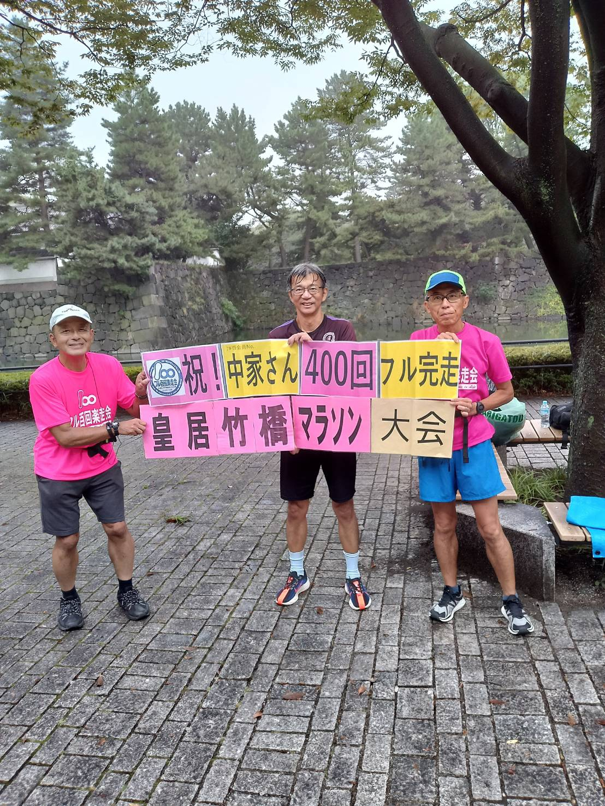
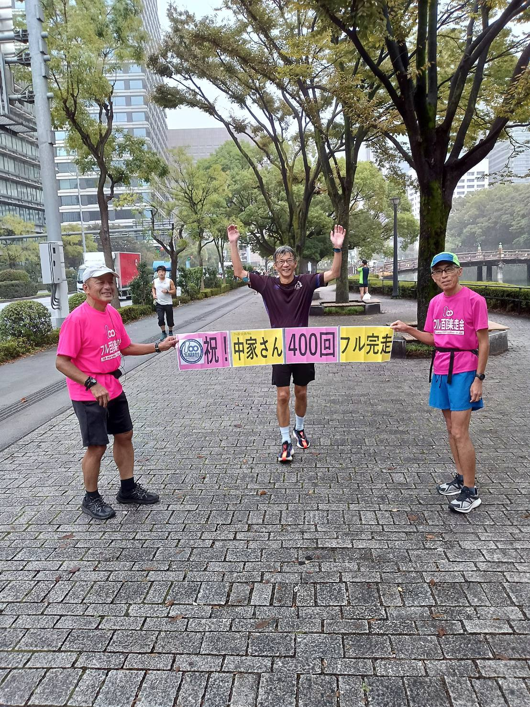

2024-10-21 04:46:13
2024年(令和6年) 10月19日（土） 曇りのち晴れ 22～29℃
| No. | 会員番号 | 氏名 | 種目 | タイム |
| 1 | 273 | 福井康太 | フル | 4:04:19 |
| 2 | 129 | 中家和宏 | フル | 5:44:22 |
| 3 | 66 | 大野清美 | フル | 7:59:12 |
| 4 | 121 | 笠井淳史 | フル | 8:08:40 |
| 5 | 105 | 宮野 繁 | 12km | 2:39:03 |
| 6 | 230 | 大沼慎也 | 記録不明 |
中家さんフル４００回完走。マラソン終了後有志で祝賀会開催。（報告＝宮野）

中家さん、400回完走記念写真

ゴール写真のイメージ写真（スタート前に撮影しました）